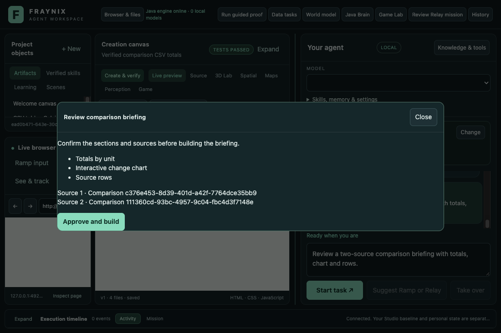
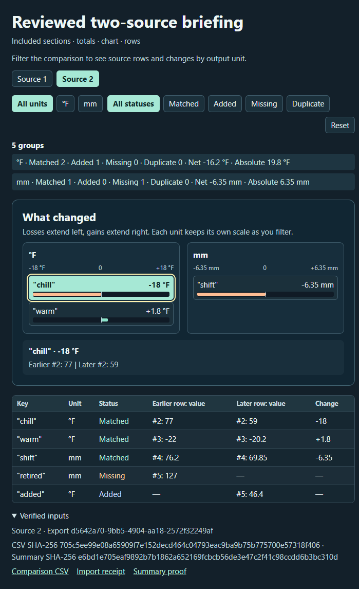

Approve one briefing from two verified comparisons
Review two verified comparisons in Chat and export one offline briefing. Each source keeps its own totals, chart, rows and proof.

Apple silicon macOS shows both comparison IDs in one review

The Windows offline file shows Source 2 and its original readings
System files
Open source